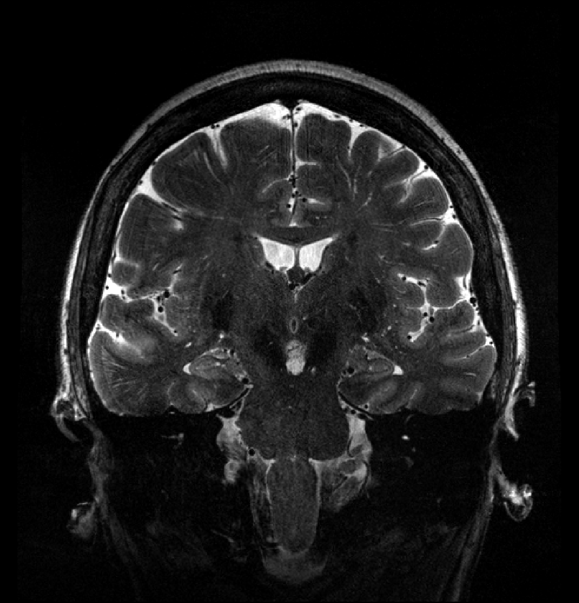
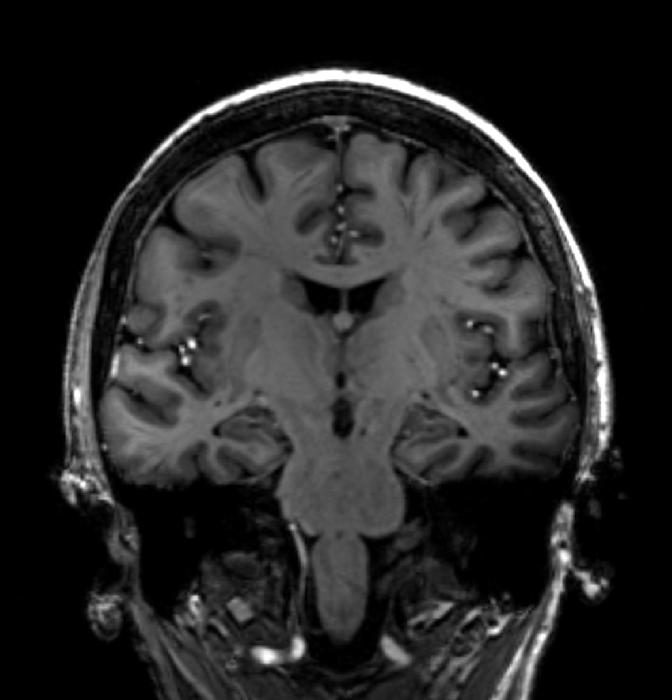
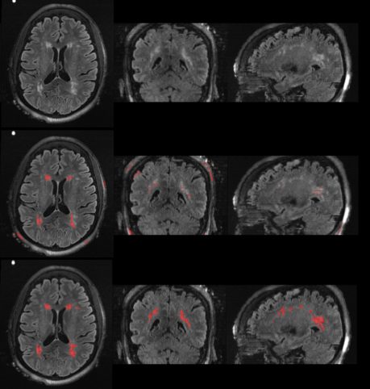
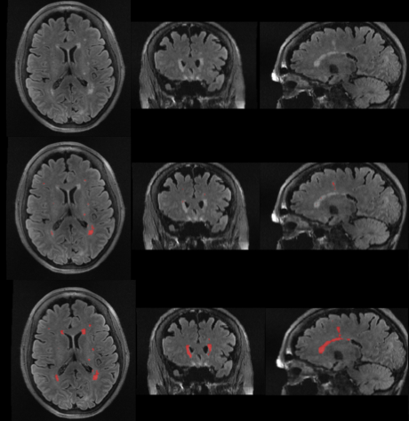
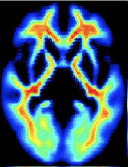
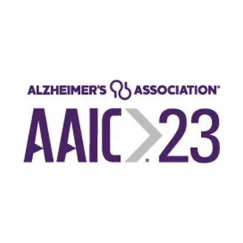

|
Jinghang Li （李京航） I am a graduate student at the University of Pittsburgh and I am a part of 7T RF Research Facility and Geriatric Psychiatry Neuroimaging Lab. My research focus entails applying deep learning models to medical image analysis.I'm interested in computer vision, deep learning, and image processing. Much of my research is about applying deep learning models on MR images where I investigated domain adaptation, image segmentaion, registration, and generative models. Email / CV / Google Scholar / Github |
{kind=link}
News |
|
[05/26] Our work MRecover — recovering motion-corrupted MRI with AI-generated contrast — is on arXiv! [project page] [04/26] Won 3rd place at the University of Pittsburgh Big Idea Competition! [10/25] Our white-matter lesion sampling workflow was published in the Journal of Neuroimaging! [02/24] Our wmh_seg paper — robust WMH segmentation across 1.5T/3T/7T — is on arXiv! [05/23] Our work on leveraging T1/T2 ratio on brain age prediction was accepted by MIDL short paper track! [04/23] Nominated as the best department TA of the year :) [02/23] Our abstract work on domain adaptation and post mortem imagery alignment were accepted by ISMRM! [06/22] I passed my preliminary exam without condition! [04/21] I accepted my bioengineering GSR letter from the University of Pittsburgh |
{kind=link}
Paper |
|
  |
MRecover: A Conditional Generative Model for Recovering Motion-Corrupted MR Images Using AI Generated Contrast
Jinghang Li, Tales Santini, Courtney Clark, Bruno de Almeida, Cong Chu, Salem Alkhateeb, et al., Minjie Wu, Tamer S. Ibrahim arXiv, 2026 paper / project page / code / model A conditional generative model that synthesizes T2w-TSE contrast from routinely acquired T1w images, recovering motion-corrupted hippocampal MRI without re-scanning. 7T→3T transfer reaches subfield-volume correlation r=0.87–0.97 and improves analyzable subjects by 31.8%, with under 30 s full-volume single-step inference. |
|
Bridging Neuroimaging and Neuropathology: A Comprehensive Workflow for Targeted Sampling of White Matter Lesions
Jinghang Li, Nadim Farhat, Jacob Berardinelli, Joseph Mettenburg, Howard Aizenstein, Tamer Ibrahim Journal of Neuroimaging, 2025 paper An end-to-end workflow bridging in-vivo neuroimaging and post-mortem neuropathology for targeted sampling of white matter lesions. |
|
|
  |
wmh_seg: Transformer based U-Net for Robust and Automatic White Matter Hyperintensity Segmentation across 1.5 T, 3T and 7T.
Jinghang Li, Taylor Forry, Tales Santini, Yuanzhe Huang, Tamer Ibrahim, Howard Aizenstein, Minjie Wu arXiv, 2024 project page / paper We leveraged a SegFormer backbone with heavy MR data augmentation for white matter hyperintensity segmentation on 1.5T, 3T, and 7T FLAIR images. Our model offers the most accurate segmentations on 7T FLAIR images. |
|
 |
Investigate Sex Dimorphism of Cerebral Myelination Across Lifespan by Leveraging Conditional Variational Autoencoder
Jinghang Li, Linghang Wang, Chang-le Chen, Tamer Ibrahim, Howard Aizenstein, Minjie Wu MIDL Short Paper, 2023 paper We implemented a 3-D cVAE conditioned on age, trained on the T1/T2 ratio image (a proxy for overall white-matter health), and used it to investigate sex differences in white-matter aging. |
Abstract |
 |
7T to 3T domain adaptation in white matter lesion segmentation on T2-weighted (T2-w) FLAIR images using deep learning
Jinghang Li, Eduardo Diniz, Taylor Forry, Tamer Ibrahim, Howard Aizenstein, and Minjie Wu ISMRM, Toronto, Canada 2023 Automatic Alignment Of Ex-Vivo Brain Pathology To 7T Structural MRI Jinghang Li, Nadim Farhat, Jacob P. Berardinelli, Joseph M. Mettenburg, Howard J. Aizenstein, Julia K. Kofler, and Tamer S. Ibrahim ISMRM, Toronto, Canada 2023 Longitudinal Change Of White Matter-Specific Brain Age Is Associated With Alzheimer'S Disease-Related Regional Atrophy Chang-Le Chen, Jinghang Li, Linghai Wang, Noah Schweitzer, Dana Tudorascu, Howard Aizenstein, and Minjie Wu ISMRM, Toronto, Canada 2023 Postmortem Imaging with Reusable 3D Printed Ex Vivo Brain Enclosures/Cutting Guide for MRI Registration with Gross Anatomy Photographs at 7T Jacob Berardinelli, Julia Kofler, Jinghang Li, Owen Flaugh, Nadim Farhat, Tales Santini, Andrea Sajewski, Noah Schweitzer, Joseph Mettenburg, Milos Ikonomovic, Howard J. Aizenstein, and Tamer S. Ibrahim ISMRM, Toronto, Canada 2023 An Open 60-channel Tx/ 32-channel Rx RF Coil System for Routine Use at 7T Andrea Sajewski, Tales Santini, Anthony DeFranco, Boris Keil, Hecheng Jin, Jacob Berardinelli, Jinghang Li, Cong Chu, Tiago Martins, and Tamer Ibrahim ISMRM, Toronto, Canada 2023 (Oral Presentation, Magna Cum Laude Merit Award) Hippocampal Subfields Volume in Middle Age Healthy Adults Salem Alkhateeb, Tales Santini, Jinghang Li, Robin Chu, Daniel Ibrahim, Anna Marsland, Stephen Manuck, Pete Gianaros, and Tamer Ibrahim. ISMRM, London, United Kingdom 2022 |
|
 |
Investigating white matter hyperintensities in a multicenter COVID-19 study using 7T MRI
Jinghang Li, Jr-Jiun Liou, Tales Santini, Salem Alkateeb, Oluwatobi Adeyemi, Gabriel Erausquin, Valentina Garbarino, Monica Goss, Mohamad Habes, Jayandra Himali, Christof Karmonik, Karl Li, Joseph Masdeu, Rejani Nair, Vibhuti Patel, Beth Snitz, Howard Aizenstein, Minjie Wu , Richard Bowtell, Gowland Penny, Gustavo Roman, Mary Ganguli, Farhaan Vahidy, Timothy Girard, Heidi Jacobs Akram Hosseini, Sudha Seshadri and Tamer Ibrahim. AAIC, Amsterdam, Netherland 2023 (Oral Presentation) |
Teaching |
 |
Teaching Assistant |
|
Template borrowed from Jon Barron |